1964-1968
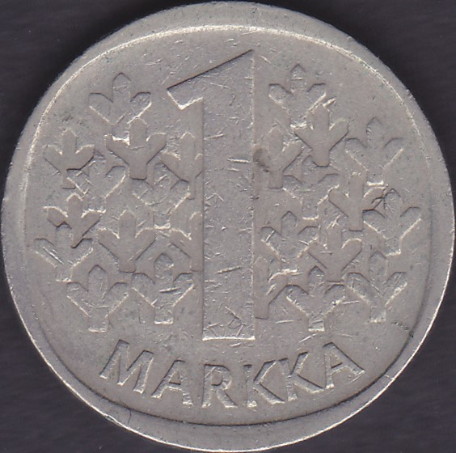
1969-1993
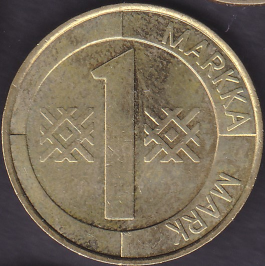
1993-2001
Clicca sulle monete per vedere il retro
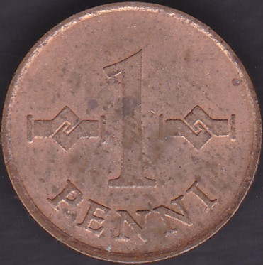
1963-1969
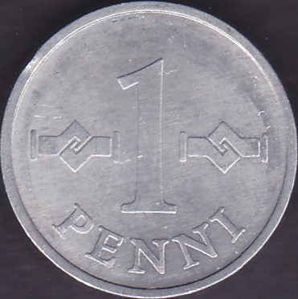
1969-1979
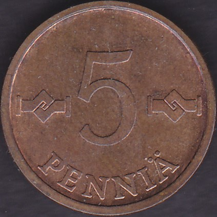
1963-1977
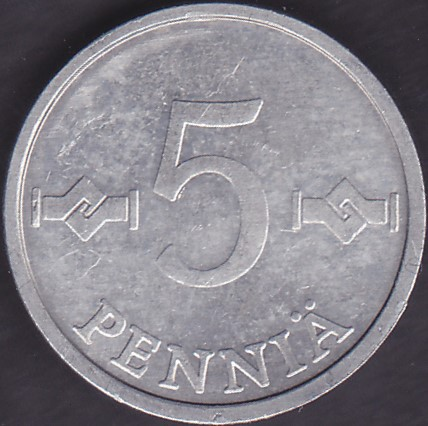
1977-1990
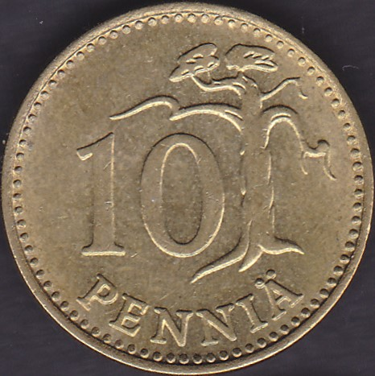
1963-1982
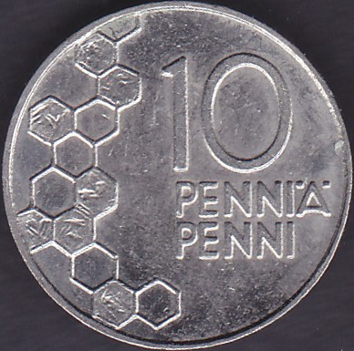
1990-2001
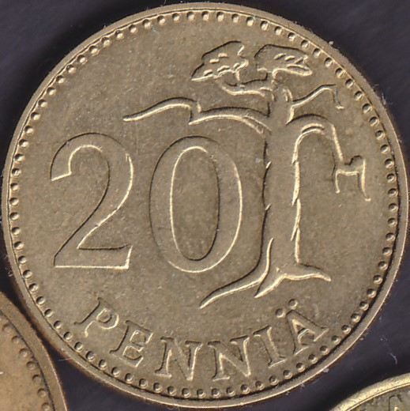
1963-1990
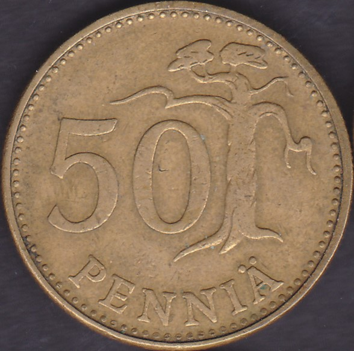
1963-1990
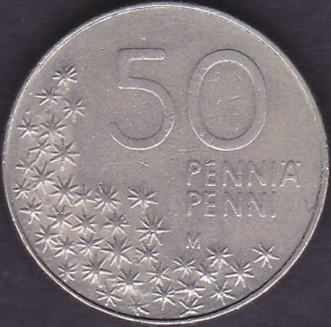
1990-2001
1964-1968

1969-1993

1993-2001
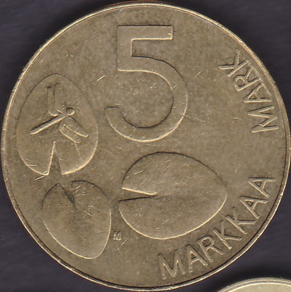
1992-2001

1956-1960

1999-2006

1999-2006

1999-2006

1999-2006

1999-2006

1999-2006

1999-2006

2007-2026

200560 anni della Finlandia nell'ONU

2006100 anni del suffragio universale

200750 anni dei Trattati di Roma

200790 anni di indipendenza

200860 anni della Dichiarazione dei diritti umani

2009200 anni di autonomia

200910 anni dell'Unione Economica e Monetaria

2010150 anni della moneta finlandese

2011200 anni della Banca di Finlandia

2012Helene Schjerfbeck

201210 anni dell'euro

2013Frans Eemil Sillanpää

2013150 anni del Parlamento

2014Ilmari Tapiovaara

2014Tove Jansson

201530 anni della bandiera europea

2015Jean Sibelius

2015Akseli Gallen-Kallela

2016Georg Henrik von Wright

2016Eino Leino

2017100 anni di indipendenza

2017Natura finlandese

2018Paesaggio di Koli

2018La sauna finlandese

2019100 anni della Costituzione

2020Väinö Linna

2020100 anni dell'Università di Turku

2021100 anni di autonomia delle Isole Åland

2021Giornalismo e libertà di parola

202235 anni del programma Erasmus

2022Ricerca sul clima

2022Il balletto finlandese

2023Servizi sociali e sanitari

2023Prima legge sulla tutela della natura

2024Architettura finlandese

2024Elezioni e democrazia

2025Diplomazia e politica estera

2025100 anni dell'incontro di atletica Finlandia-Svezia

2026Yle, radiotelevisione finlandese

2026Raili e Reima Pietilä